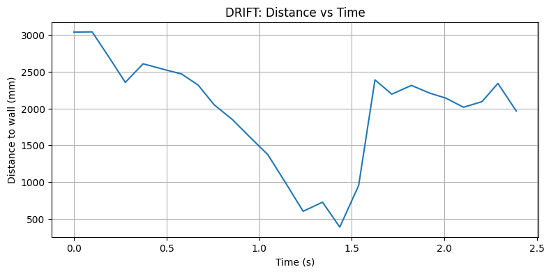
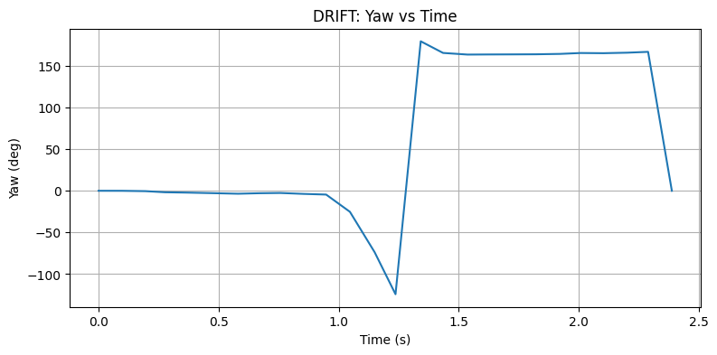
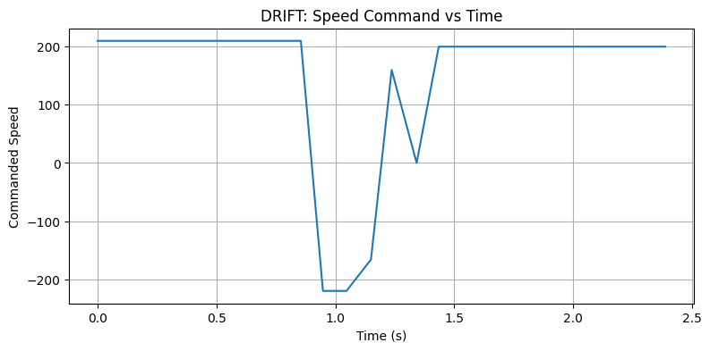
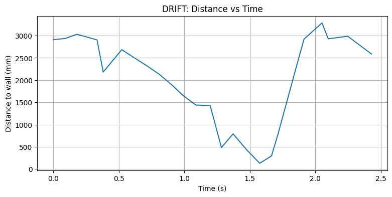
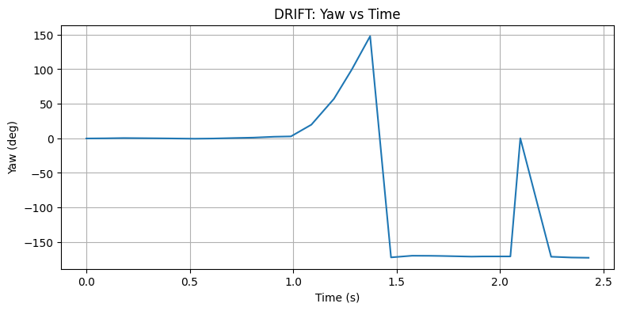
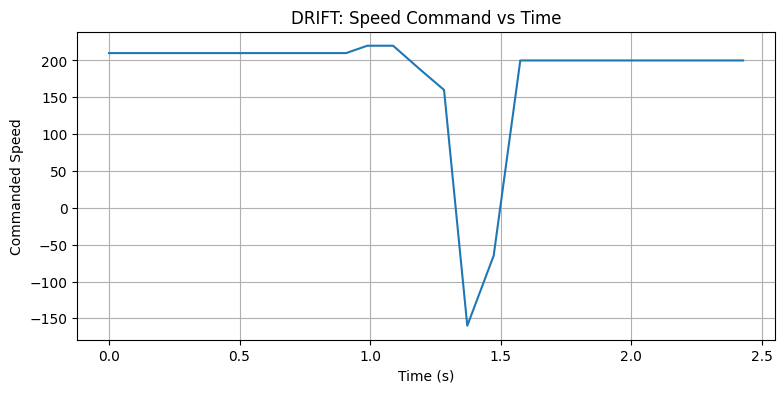

Drift
In this lab, I chose the Drift task. In this task, the robot starts at a designated line, drives forward at high speed, and initiates a 180-degree turn when it is within 3 ft of the wall.
Drift Implementation
In this task, based on the previous orientation PID control lab, it was convenient to achieve the robot’s 180-degree turn and implement the drift behavior. I used a command case to control the entire process, including forward motion, a 180-degree turn, and returning. Since the robot turns 180 degrees and then moves forward again, the return motion is effectively another forward motion. The command I sent included multiple parameters, such as forward speed, trigger distance, PID parameters, target rotation angle, total process time, and forward speed after the turn.
flip_records = []
forward_speed = 210
trigger_mm = 2000
Kp = 2.6
Ki = 0.25
Kd = 0.32
target_yaw = 180
settle_ms = 40
angle_tolerance = 15
forward_after_turn_speed = 200
forward_after_turn_ms = 1000
payload = f"{forward_speed}|{trigger_mm}|{Kp}|{Ki}|{Kd}|{target_yaw}|{settle_ms}|{angle_tolerance}|{forward_after_turn_speed}|{forward_after_turn_ms}"
ble.send_command(CMD.DRIFT, payload)The overall implementation is relatively straightforward. At the beginning, I initialized all sensors, then started moving forward while continuously recording the distance. During this process, I observed that the robot moved very fast. When I initially set the trigger distance to 3 ft, the robot often collided with the wall. This is because the robot speed was too high, and the ToF sensor sampling rate was relatively low, so large distance changes occurred between consecutive samples before the trigger condition was met. After tuning, I determined a more appropriate trigger distance that allowed the robot to initiate the drift safely when approaching the wall, like trigger distance as 2000 mm or 1800 mm.
I also found that implementing orientation PID during motion required additional considerations. Sometimes, when I run the robot in different environments, the behavior can vary. So everytime I should adjusted my PID parameters. To ensure a successful drift, I introduced a short settling stage, where the robot briefly stops like 40 ms (which is very short) before immediately performing the orientation rotation. During the rotation, I implemented a stable count mechanism: once the robot reaches the target angle, a counter accumulates small increments to confirm that the robot has stabilized at the desired orientation degree. This ensures that the drift is fully completed before proceeding to the next forward motion phase. But I found that when I set the stable count too high, the robot would wait for a while to acumulate the count, which made the overall process not smooth. So I set the stable count to 1, which means that as long as the robot reaches the target angle once, it will immediately proceed to the next step, which is more suitable for this task.
Because my ToF sensor Front is broken, so I switched the ToF sensor on the side to detect the distance for drift.
case DRIFT:
{
// ...
// get parameters from payload, including forward_speed, trigger_mm, Kp, Ki, Kd,
// target_delta_yaw, settle_ms, angle_tol, forward_after_turn_speed, forward_after_turn_ms
// ...
if (!success) return;
drift_n = 0;
ori_prev_time = 0;
ori_prev_err = 0.0f;
ori_integral_err = 0.0f;
stop();
delay(100);
calibrate_gyro_bias();
myICM.resetFIFO();
float yaw_abs_init = 0.0f;
float current_yaw = 0.0f;
unsigned long wait_start = millis();
while (millis() - wait_start < 1000) {
if (read_dmp_yaw_latest(yaw_abs_init)) {
yaw_dmp_zero = yaw_abs_init;
current_yaw = 0.0f;
break;
}
delay(5);
}
distanceSensorLeft.startRanging();
unsigned long start_time = millis();
unsigned long settle_start = 0;
unsigned long forward_after_turn_start = 0;
bool triggered = false;
bool turning = false;
bool forward_after_turn = false;
bool done = false;
float yaw_target = 0.0f;
int stable_count = 0;
while (!done) {
unsigned long now = millis();
int d = -1;
if (distanceSensorLeft.checkForDataReady()) {
d = distanceSensorLeft.getDistance();
distanceSensorLeft.clearInterrupt();
if (d < 30 || d > 4000) d = -1;
}
float yaw_abs_now = 0.0f;
if (read_dmp_yaw_latest(yaw_abs_now)) {
current_yaw = wrap_angle_deg(yaw_abs_now - yaw_dmp_zero);
}
float yaw_rate = 0.0f;
if (myICM.dataReady()) {
myICM.getAGMT();
yaw_rate = myICM.gyrZ() - gyro_z_bias;
}
float pterm = 0.0f, iterm = 0.0f, dterm = 0.0f;
int u = 0;
int state = 0;
// State 0: fast forward
if (!triggered) {
state = 0;
forward(forward_speed);
u = forward_speed;
if (d != -1 && d <= trigger_mm) {
triggered = true;
settle_start = now;
stop();
}
}
// State 1: settle
else if (!turning && !forward_after_turn) {
state = 1;
stop();
if (now - settle_start >= settle_ms) {
turning = true;
ori_prev_time = 0;
ori_prev_err = 0.0f;
ori_integral_err = 0.0f;
stable_count = 0;
yaw_target = wrap_angle_deg(current_yaw + target_delta_yaw);
}
}
// State 2: turn
else if (turning) {
state = 2;
u = pid_orientation_control(
Kp, Ki, Kd,
current_yaw, yaw_target, yaw_rate,
pterm, iterm, dterm
);
float err = wrap_angle_deg(yaw_target - current_yaw);
if (fabs(err) < angle_tol && fabs(yaw_rate) < 30.0f) {
stable_count++;
} else {
stable_count = 0;
}
if (stable_count >= 1) {
turning = false;
forward_after_turn = true;
forward_after_turn_start = now;
stop();
}
}
// State 3: forward after turn
else if (forward_after_turn) {
state = 3;
forward(forward_after_turn_speed);
u = forward_after_turn_speed;
if (now - forward_after_turn_start >= forward_after_turn_ms) {
done = true;
state = 4;
}
}
if (drift_n < DRIFT_DATA_NUM) {
drift_time[drift_n] = now - start_time;
drift_tof[drift_n] = d;
drift_yaw[drift_n] = current_yaw;
drift_yaw_rate[drift_n] = yaw_rate;
drift_speed[drift_n] = u;
drift_state[drift_n] = state;
drift_p[drift_n] = pterm;
drift_i[drift_n] = iterm;
drift_d[drift_n] = dterm;
drift_n++;
}
delay(5);
}
distanceSensorLeft.stopRanging();
stop();
break;
}
In addition, I used a state variable to track the robot's current status throughout the process. This made it easier to analyze the recorded data, including distance, orientation angle, and state transitions, providing a clearer understanding of the robot's behavior during the entire drift process.
After finishing the implementation, I sent the command to the robot and get the data records. I plotted the distance, orientation angle, and state transitions over time to analyze the robot's behavior during the drift process. The plots showed that the robot successfully initiated the drift at the appropriate distance, completed the 180-degree turn, and continued moving forward after the turn, demonstrating that the implementation was successful.
The first setup is forward_speed = 210, trigger_mm = 2000, Kp = 3.2, Ki = 0.21, Kd = -0.32, target_delta_yaw = 180.



The second setup is forward_speed = 210, trigger_mm = 2000, Kp = 2.6, Ki = 0.25, Kd = -0.32, target_delta_yaw = 180.



I used wrap_angle_deg function to wrap the angle error within the range of -180 to 180 degrees, so it may look like the robot's orientation angle suddenly jumps from around 180 degrees to -180 degrees during the turn. However, this is just a representation issue due to angle wrapping, and in reality, the robot is smoothly turning through the 180-degree. The PID controller is effectively handling the orientation control, allowing the robot to successfully complete the drift.
Finally, there are three videos showing the robot's behavior during the drift process. The videos demonstrate that the robot successfully initiates the drift at the distance, completes the 180-degree turn, and continues moving forward after the turn, confirming that the implementation is successful.
Reference
Thanks to Professor Helbling and the TAs for their help during lab sessions. I refer to Wenyi Fu's and Lucca Correia's websites as guidance and as references for web design. I used Nano Banana Pro to help me with generating the cover of my lab, which is shown in the home page. I used AI tools to help me with refining the writing and improving the clarity of my report.
Note
In the report, I did not put some code implementations of simple functions and roughly duplicate parts. If necessary, please feel free to contact me.